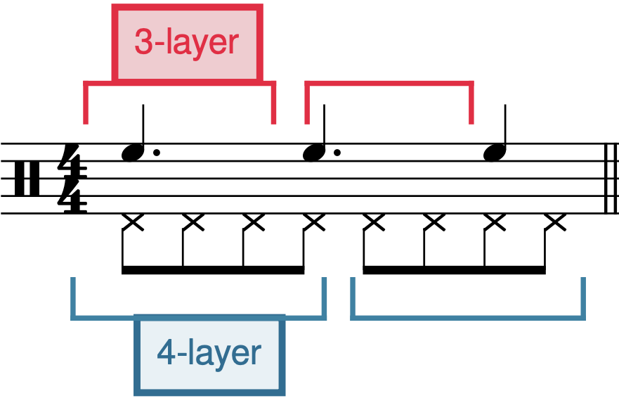
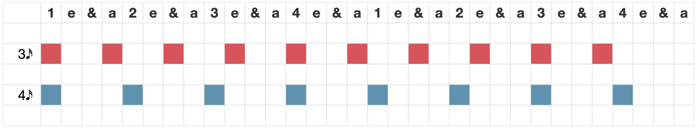

Open Music Theory：繁體中文版
拍節不協和
「不協和」是用途很多的詞，在音樂分析內外都有不同含意。音樂之外，例如文化失調或認知失調，常帶有負面意思；音樂卻能把看似不對、格格不入的事物化成優點。因此，音樂中的不協和並不等於這些情境中的「不好」。不過，特定風格仍可能要求適當處理與解決，至少調性對位法便是如此。
協和與不協和的觀念，也被用來理解拍節。[1]Harald Krebs在1999年的研究，推動了當代拍節不協和理論的發展。[2]本章依據Krebs的理論，把拍節不協和分成位移不協和與分組不協和，以下分別討論。
查看英文原文
Key Takeaways
- Metrical dissonance refers to the coexistence of two or more unaligned metrical layers in a single passage of music.
- Metrical dissonance can be divided into two types:
- Displacement dissonance, in which two or more layers with the same meter (or grouping structure) are displaced against each other
- Grouping dissonance, in which two or more layers with unique grouping structures (that are not simple multiples/factors of each other) can be heard simultaneously.
- Grouping dissonance often occurs with an ostinato—a repeating musical pattern within a context that is not similarly repeating.
“Dissonance” is one of those multi-purpose terms with a range of uses both within and beyond musical analysis. Outside of music, terms such as cultural or cognitive dissonance usually have negative connotations, but music has a way of making a virtue of the “wrong” or “ill-fitting.” Musical dissonance is not “bad” in the same sense as some of these other contexts (though stylistic norms may require proper handling and resolution, at least in the case of tonal counterpoint).
These same notions of consonance and dissonance have been applied to meter.[1] The modern conception of metrical dissonance was galvanized by Harald Krebs (1999).[2] This chapter is based on Krebs's theory, and categorizes metrical dissonance as either displacement dissonance or grouping dissonance, each of which is discussed further below.
某個音樂層次聽起來與周圍脈絡不同步時，就會產生位移不協和。例1用熟悉的曲調示範：1a的旋律與低音同步，1b卻晚了一個八分音符。因此，例1b是位移不協和的例子。不過，1b最後一音又回到正確位置，與低音同步；實際作品也常作這種調整，尤其用於終止等處，產生收束或到達感。這是簡單的位移不協和：兩個層次暗示同一拍節，其中一層卻固定錯開一段時值。錯開的時值稱為位移量；因此例1b的位移量是＋1♪，即延後一個八分音符。
例1。位移不協和示範。
分別聽例2a與2b，很可能會自然地把各段開頭視為[latex]\mathbf{^3_4}[/latex]的第一拍，形成四小節[latex]\mathbf{^3_4}[/latex]。但在這兩條線的原出處——Marie Jaëll的《即興曲》——它們實際同時出現，旋律相對低音卻延後一個八分音符，位移量同樣是＋1♪。
例2。Marie Jaëll《即興曲》（1869；錄音4分43秒）中的位移不協和，位移量＋1♪。
例3來自Bill Withers的名曲〈Lean on Me〉（1972）B段，錄音約1分45秒與2分36秒，歌詞說到向兄弟求助之處。A段的拍節與分組清楚，建立了聽者的預期；到了B段，拍手聲產生強烈的位移不協和。流行鼓型中，拍手通常代替小鼓，在四拍子的第二、第四拍奏出反拍重音。但這裡拍手落在小節內第二、第六個八分音符位置，像是把反拍重音提早一個八分音符，位移量為－1♪。[3]整首歌的主要拍節可能始終沒有疑義；不過，把這些規則性的切分理解為可能暗示另一種拍節相位的位移，能幫助我們看清此處豐富的節奏與拍節。
例3。Bill Withers〈Lean on Me〉（原圖說標示2017；錄音1分45秒）中的位移不協和，位移量－1♪。括號標出正文討論的位移。
查看英文原文
Displacement Dissonance
Displacement dissonance occurs when one layer of the music seems to be out-of-sync with the surrounding context. Example 1 uses a familiar tune to illustrate: in 1a, the tune is in sync with the bass line; in 1b, it is an eighth note "late." Example 1b then is an example of displacement dissonance. Note that the final note of 1b arrives properly in sync with the bass; this kind of adjustment is common in real pieces as well, especially to create a sense of conclusion or arrival (e.g., at cadences). This is a simple example of displacement dissonance: when two layers imply the same meter, but one is offset from the other by a consistent rhythmic value. This rhythmic value is called the displacement index; so, the displacement index of Example 1b is +1♪.
Example 1. Illustration of displacement dissonance.
Listening to Examples 2a and 2b, one would likely default to beginning these passages on beat 1 of a [latex]\mathbf{^3_4}[/latex] measure, creating four bars of [latex]\mathbf{^3_4}[/latex]. In the actual piece these lines are drawn from—Marie Jaëll's Impromptu—the two lines occur simultaneously, but the melody is offset from the bass line, moved forward by one eighth note (again, a displacement index of +1♪).
Example 2. Displacement dissonance (+1♪) in Marie Jaëll's Impromptu (1869; 4:43).
Example 3 provides another example from the B section (at 1:45 and 2:36, to the lyrics "you just call on me, brother, when you need a hand") of Bill Withers's iconic “Lean on me” (1972). In the A section of this song, the meter and grouping are clear and set the listener's metric expectations. In the B section, the hand claps create a strong sense of displacement dissonance. Hand claps are typically a snare-drum substitute in pop drumbeats, playing the backbeat on beats 2 and 4 of a quadruple meter. But here, the handclaps are on the 2nd and 6th eighth notes of the bar, suggesting a backbeat that occurs an eighth note early (−1♪).[3] The song's overarching meter may never be in doubt, but the rhythmic-metrical richness of this passage can be helpfully understood in terms of the systematic syncopations that potentially point to alternative displacements of the meter.
Example 3. Displacement dissonance (−1♪) in Bill Withers's “Lean on me” (2017; 1:45). Brackets indicate the displacements discussed in the text.
分組不協和，是內部分組方式不同的兩個層次相結合。更精確地說，每一層的一組包含不同數量的脈動，也就是不同的脈動基數，而這些數量彼此不是倍數或因數。可以依每組的脈動數量稱呼各層，例如「3分組層」與「4分組層」。例4提供簡單示範。
例4。分組不協和示範。
例4a中，2分組層與3分組層並置的方式十分常見，因此有專名：赫米奧拉。這類分組不協和，在早期西方音樂會曲目中就已出現，例如例5的韓德爾《水上音樂》第二號組曲第二樂章〈Alla hornpipe〉。這種赫米奧拉常見於三拍子作品的重要終止處：原本兩個三拍子小節，屬於3分組層，可以改聽成三組、每組兩拍的2分組層。不協和增添興奮感，也強化熟悉的終止和聲進行所帶來的緊張與釋放。
例5。韓德爾〈Alla hornpipe〉，《水上音樂》第二號組曲第二樂章（原章標年1733）中的赫米奧拉。第9至10小節表層節奏暗示的2分組層，以紅色標出，與拍節的3分組層形成分組不協和。
{kind=link}

- 3-layer＝每組三個共同脈動的層次；
- 4-layer＝每組四個共同脈動的層次。
- 上方附點四分、附點四分、四分音符，形成3＋3＋2個八分音符；
- 下方八個八分音符以4＋4分組。
紅括號與藍括號分別標示兩層。
三對四（3:4）是另一種常見的節奏與拍節關係，很容易以分組不協和理解。例4b呈現完整週期，但實際音樂中，局部週期更常見，尤其在從經典爵士到電子舞曲（EDM）的流行音樂中。非裔古巴的tresillo節奏，就可以視為三對四不協和的局部週期，如例6。
例7來自Calvin Harris的〈I’m Not Alone〉（2009），呈現以十六分音符為共同脈動的局部3:4分組不協和。每拍大鼓與反拍重音上的拍手聲，使整首歌的單四拍子很清楚；合成器與貝斯的反覆樂句，卻以三個十六分音符為基礎分組，與之衝突。請留意，3分組層最後縮成一組兩個脈動，讓反覆樂句每兩小節回到一次小節強拍。
- Synth＝合成器；
- Bass＝貝斯；
- Hi-hat＝踩鈸；
- Handclap／clap＝拍手；
- Kick drum＝大鼓。
- 紅色3加十六分音符表示每三個十六分音符一組；
- 藍色4加十六分音符表示每四個一組，即四分音符拍點。
- 最後一個八分音符由第30個零起算位置延續至兩小節末的32；
- 方格圖例8漏了這個起音。
例7。Calvin Harris〈I’m Not Alone〉（2009；錄音0分59秒）中，合成器與貝斯的3分組層，和拍節、鼓型的4分組層形成分組不協和。
分組不協和與複節奏，往往用方格記譜比西方傳統記譜更容易理解；後者優先呈現的拍節階層，在這種情況下未必有幫助。例8以方格圖表示〈I’m Not Alone〉。西方記譜必須在不常見的附點節奏與大量延音線之間作選擇，兩者各有優缺點；方格記譜則避開這個問題，也使數學關係更清楚。若兩層從同一擊點開始，且各自完整規律地持續反覆，就會在經過x個共同脈動後重新同時起音，其中x是兩層分組數量的最小公倍數。3與4的最小公倍數是12，因此完整的3:4分組不協和，每12個脈動重新對齊一次。
{kind=link}

上列1 e ＆ a、2 e ＆ a、3 e ＆ a、4 e ＆ a重複兩次，表示兩小節，每拍四個十六分音符位置。
- 紅列3個十六分音符一組，藍列4個一組；
- 色格表示起音，空格表示沒有新起音，不一定等於休止。
此圖的紅色最後一段與正文截短說明不同，詳見譯註。
查看英文原文
Grouping dissonance
Grouping dissonance is the combination of two layers with different internal grouping organization; more specifically, the two layers articulate groupings with different numbers of pulses (pulse cardinalities), and these cardinalities are not multiples/factors of one another. These layers can be referred to in terms of their cardinalities to distinguish them: for example, a "3-layer" and a "4-layer." Example 4 provides simple illustrations of grouping dissonance.
Example 4. Illustration of grouping dissonances.
The juxtaposition of 2- and 3-layers as in Example 4a is common enough to be known by a special name: the hemiola. The hemiola is a grouping dissonance found even in early Western concert music, such as G.F. Handel's Water Music Suite No. 2, mvt. II ("Alla hornpipe"), shown in Example 5. This sort of hemiola is often found at important cadences of pieces in triple meter, where two measures of triple meter (a 3-layer) can be interpreted as three groups of two beats (a 2-layer) instead. This dissonance heightens excitement and reinforces the sense of tension-and-release created by the familiar cadential harmonic progression.
Example 5. A hemiola in Handel's "Alla hornpipe" (Water Music Suite No. 2, mvt. II; 1733). The 2-layer implied in the surface rhythms of mm. 9–10 (red) create grouping dissonance with the 3-layer of the meter.
Three-against-four (3:4) is another widespread rhythmic-metrical pattern that can be readily heard in terms of grouping dissonance. Example 4b sets out a complete cycle of this grouping dissonance, but partial cycles are more common in musical practice, especially in pop music—from classic jazz to electronic dance music (EDM). The Afro-Cuban tresillo rhythm can be viewed as a partial cycle of the 3-against-4 dissonance (Example 6).
Example 7 shows a partial 3:4 grouping dissonance (sixteenth-note pulse) from Calvin Harris's “I’m Not Alone” (2009). The song's overall simple quadruple meter is clear from the four-on-the-floor kick drum and handclap on the backbeat, but the synth and bass riffs creates metrical dissonance out a conflicting pattern based on groupings of three sixteenth notes. Note that the 3-layer breaks off with a 2-pulse-long grouping so that the riff has a downbeat arrival on every other measure.
Example 7. A 3-layer in the synth and bass create grouping dissonance with the 4-layer in the meter and drumbeat in Calvin Harris's "I’m Not Alone" (2009; 0:59).
Grouping dissonances and polyrhythms can often be easier to understand in box notation rather than traditional Western notation, which prioritizes metrical hierarchies in a way that might not be helpful when dealing with grouping dissonance. Example 8 is a box notation diagram illustrating "I'm Not Alone." In Western notation, we are forced to choose between unusual dotted rhythms or very frequent ties, both of which have advantages and disadvantages, but in box notation, this issue is entirely circumvented. The box notation also clarifies the mathematical properties of grouping dissonances. Any grouping dissonance will have a point of realignment, where both layers have a simultaneous attack point. This happens after x number of pulses, where x is the lowest common multiple between the cardinalities of the two layers. 12 is the lowest common multiple between 3 and 4, so a 3:4 grouping dissonance realigns every twelve pulses.
固定音型造成的分組不協和
許多音樂風格常用固定音型：某個節奏動機反覆，周圍脈絡卻不以同樣方式反覆。如果固定音型的長度與主要拍節不一致，就可能形成分組不協和。此時，單看節奏未必能辨認出不協和，但把固定音型的音高內容一起考慮，分組衝突就聽得出來。
史特拉汶斯基特別喜愛拍節不協和及其他節奏上的驚奇。在《詩篇交響曲》的〈哈利路亞，讚美上主〉中，他用固定音型造成分組不協和，如例9。低音由二分音符組成，本身不與[latex]\mathbf{^3_2}[/latex]拍衝突；但E♭—B♭—F—B♭四音反覆，暗示四拍分組，與旋律及其他線條的三拍分組不對齊。請聽兩次：第一次，跟隨旋律指揮[latex]\mathbf{^3_2}[/latex]；第二次，跟著低音指揮[latex]\mathbf{^4_2}[/latex]。
例9。史特拉汶斯基《詩篇交響曲》〈哈利路亞，讚美上主〉（錄音6分37秒）中，固定音型的4分組層，與其他聲部的3分組層形成分組不協和。
查看英文原文
Grouping dissonance via ostinati
A common musical device in many sorts of music is the ostinato: a rhythmic motive that repeats within a context that is not similarly repeating. If the length of the ostinato does not align with the prevailing meter, the ostinato can create a sense of grouping dissonance. In these cases, the rhythms on their own may not indicate a grouping dissonance, but combined with the pitch content of the ostinato, a grouping dissonance becomes audible.
Igor Stravinsky, a particular lover of metrical dissonance and other kinds of rhythmic surprise, creates grouping dissonance with an ostinato in the "Alleluia, laudate dominum" from Symphony of Psalms (Example 9). While the half notes that form the bass line of this excerpt are not themselves in conflict with the [latex]\mathbf{^3_2}[/latex] meter, the repeating pattern of four notes (E♭–B♭–F–B♭) suggests a four-beat grouping that does not align with the three-beat grouping of the melody and other lines. Listen to the example twice: the first time, conduct the [latex]\mathbf{^3_2}[/latex] meter of the melody; the second, conduct [latex]\mathbf{^4_2}[/latex] with the bass line.
Example 9. A 4-layer in the ostinato creates a grouping dissonance with the 3-layer in the other voices in Stravinsky's "Alleluia, laudate dominum" from Symphony of Psalms (6:37).
不協和的變化
有些音樂建立律動後，就一直維持；但許多作品並非如此。它們可能在某些地方使用拍節不協和，其他地方不用，藉此產生緊張與釋放。以上方Bill Withers的例子來說，B段的拍節不協和，就與節奏平直、沒有這種不協和的A段形成對比。
最後，以布拉姆斯著名的〈搖籃曲〉（Wiegenlied，作品49第4首）來看不協和如何變化。[4]歌唱旋律的節奏，在記譜的[latex]\mathbf{^3_4}[/latex]中非常規則。再看例10的鋼琴伴奏：左手低音同樣規則，右手高音卻走自己的路。
- 開頭的節奏暗示每組三個八分音符，似乎比[latex]\mathbf{^3_4}[/latex]更適合[latex]\mathbf{^6_8}[/latex]，而且又錯開一個八分音符。因此，甚至在歌聲進入前，就可能同時有位移與分組不協和。
- 分組不協和幾乎立刻消失，轉為位移不協和：分組穩定成兩個八分音符一組，仍錯開一個八分音符，並維持主歌大部分時間。
- 開頭的雙重不協和短暫回返，接著讓位給……
- ……右手終於在小節強拍奏出一音！第二拍的附點四分音符，仍可能暗示較溫和的位移不協和：延後一個四分音符，強調第二拍而非第一拍，像薩拉邦德。
- 再過一小節，六個八分音符都以強弱交替呈現，完全沒有不協和感。
- 最後四小節的型態重複一次。
這種解讀描繪了輕微緊張走向釋放的過程，與搖籃曲的情緒十分相稱。當然，你也可以不同意這個分析。
例10。布拉姆斯〈搖籃曲〉（Wiegenlied，作品49第4首）中，拍節不協和的變化。
- Gotham, Mark。2022。〈邁向以認知為基礎的拍節不協和量化〉（Towards a Cognitively Based Quantification of Metrical Dissonance）。收於Mark Doffman、Emily Payne與Toby Young編，《牛津音樂時間手冊》（The Oxford Handbook of Time in Music）。牛津大學出版社。DOI：10.1093/oxfordhb/9780190947279.013.12。
- Krebs, Harald。1999。《幻想曲集：舒曼音樂中的拍節不協和》（Fantasy Pieces: Metrical Dissonance in the Music of Robert Schumann）。紐約：牛津大學出版社。
- 分組不協和作曲練習（PDF、MuseScore檔）：請學生以不同長度的反覆動機，創作兩首短曲，形成分組不協和。內容涉及五聲音高集合與六音集合。
媒體出處
- 〈Tresillo作為分組不協和〉，© Megan Lavengood，採CC BY-NC-SA姓名標示—非商業性—相同方式分享授權。
- 〈I’m Not Alone方格圖〉，© Megan Lavengood，採CC BY-NC-SA姓名標示—非商業性—相同方式分享授權。
- 儘管存在明顯差異，調性不協和與拍節不協和仍有足夠的共同點，可以依組成部分之間比例關係的簡單程度，作相互比較。↵
- Krebs又引用作曲家白遼士於1837年11月10日在《辯論日報》副刊發表的文章，作為最早明確以這些術語比較兩者的例子。↵
- 其他樂器也可能被聽成更多位移不協和層次。以電貝斯為例，低音域G—A—C的弱起音型，強化主要拍節；第三拍又有突出的較高音，彷彿另一條聲部。它可能暗示位移量為一個二分音符的另一種[latex]\mathbf{^4_4}[/latex]拍節。開放踩鈸奏出的反拍重音，也可能被聽成位移一個四分音符的不協和；但許多聽者太熟悉這種反拍型態，反而會覺得它強化原拍節。↵
- 查看完整重製樂譜。↵
查看英文原文
Changing Dissonance
Some music gets into a groove and sticks with it, but many do not: a piece may use metrical dissonance in some places and not others, creating a sense of tension-and-release. Consider the Bill Withers example above: the metrical dissonance in the B section contrasts with the A section that rhythmically very straight and without dissonance.
Let's close with an example of this technique of changing dissonance in Brahms well-known "Lullaby" ("Wiegenlied", Op. 49, No. 4).[4] The rhythm of the vocal melody is highly regular in the notated [latex]\mathbf{^3_4}[/latex]. Now have a look at the piano accompaniment, shown in Example 10. The left hand (bass) is every bit as regular as the voice, but the right hand (treble) goes its own way:
-
- We start with a rhythmic pattern suggesting three-eighth-note-long groupings that might fit better in [latex]\mathbf{^6_8}[/latex] rather than [latex]\mathbf{^3_4}[/latex], displaced by an eighth. (So before the voice even enters we arguably have both displacement and grouping dissonance!)
- The grouping dissonance disappears almost immediately and shifts to displacement dissonance: we settle on a two eighth note grouping structure, but displacement by an eighth. This remains for the majority of the verse.
- The opening double-dissonance briefly returns, before giving way to…
- …the right hand (finally) playing a note on the downbeat! The dotted-quarter on beat 2 may still suggests displacement dissonance, but of a milder kind: displacement forward by a quarter note, to emphasize the second beat instead of the first (like a sarabande).
- Finally, a measure later, we have all 6 eighth notes in the bar in a strong-weak alternation—no sense of dissonance at all.
- The last four-bar pattern repeats.
This reading (which you may, of course, disagree with) describes a process of (slight) tension to release that is entirely in keeping with the mood of this lullaby.
Example 10. Changing metrical dissonance in Brahms' "Lullaby" ("Wiegenlied", Op. 49, No. 4).
- Gotham, Mark. 2022. “Towards a Cognitively Based Quantification of Metrical Dissonance.” In The Oxford Handbook of Time in Music, edited by Mark Doffman, Emily Payne, and Toby Young. Oxford University Press. https://doi.org/10.1093/oxfordhb/9780190947279.013.12.
- Krebs, Harald. 1999. Fantasy Pieces: Metrical Dissonance in the Music of Robert Schumann. New York: Oxford University Press.
- Grouping Dissonance Composition Exercise (.pdf, .mscz). Asks students to compose two mini pieces with repeating motives of different lengths, creating grouping dissonance. References the pentatonic and hexatonic collections.
Media Attributions
- Tresillo as grouping dissonance © Megan Lavengood is licensed under a CC BY-NC-SA (Attribution NonCommercial ShareAlike) license
- Box chart for “I’m Not Alone” © Megan Lavengood is licensed under a CC BY-NC-SA (Attribution NonCommercial ShareAlike) license
- Notwithstanding notable differences, there are sufficiently strong commonalities between tonal and metrical dissonance to set them out in comparable ways, based on the simplicity of the proportional relationships between the constituent parts. ↵
- Krebs, in turn, cites an 1837 article by composer Hector Berlioz ("Feuilleton du Journal des Débats, November 10, 1837") as the earliest explicit comparison using these terms. ↵
- Other instrumental parts could also potentially be heard as further layers of displacement dissonances. Starting with the bass guitar, while the anacrustic pattern (G–A–C) in the low register reinforces the main meter, there is also a prominent note in a higher register on beat 3 that asserts itself as a different voice. This potentially represents an alternative [latex]\mathbf{^4_4}[/latex] meter with a displacement index of one half note. The backbeat articulated with open hi-hat notes, in turn, could also be heard as a displacement dissonance (index of one quarter note), but note that many listeners will find this backbeat pattern so familiar that it actually reinforces the original meter. ↵
- View a full score transcription. ↵